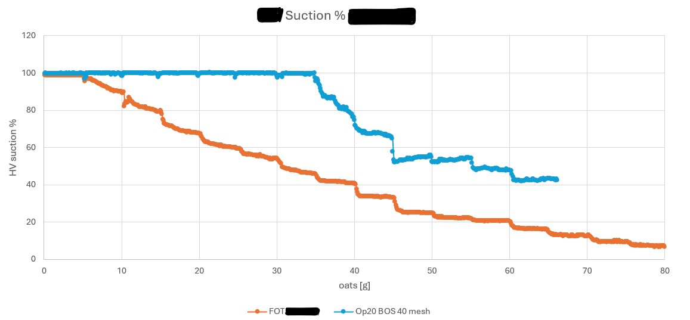
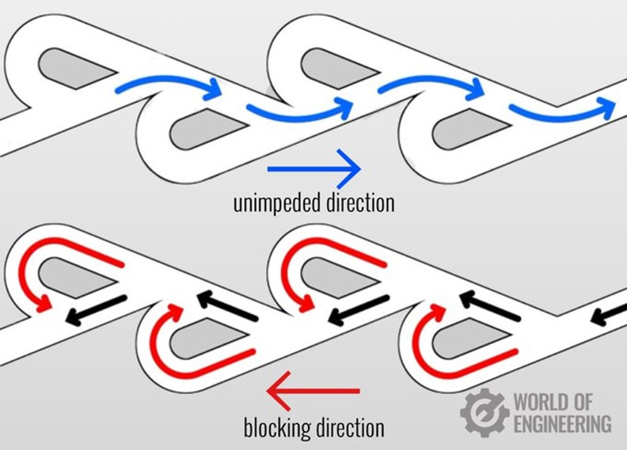
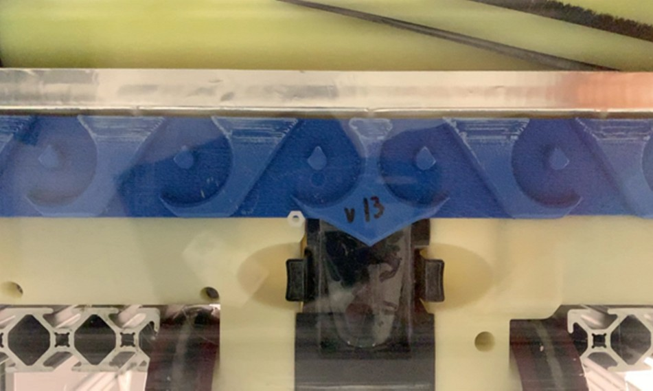
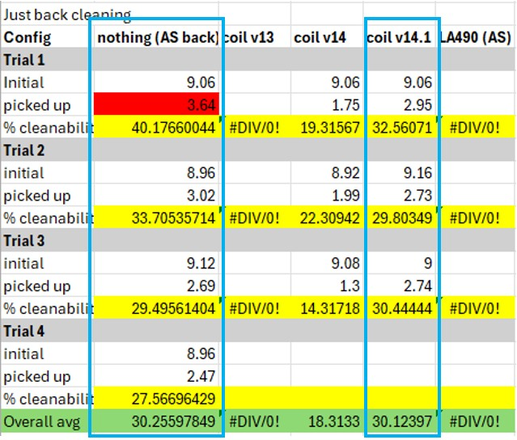
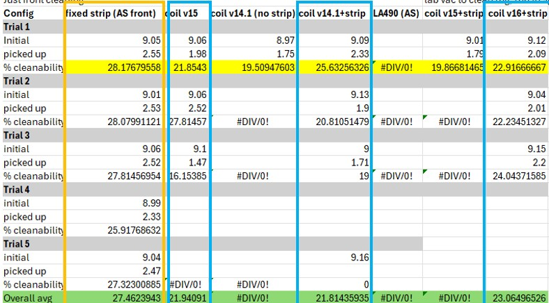
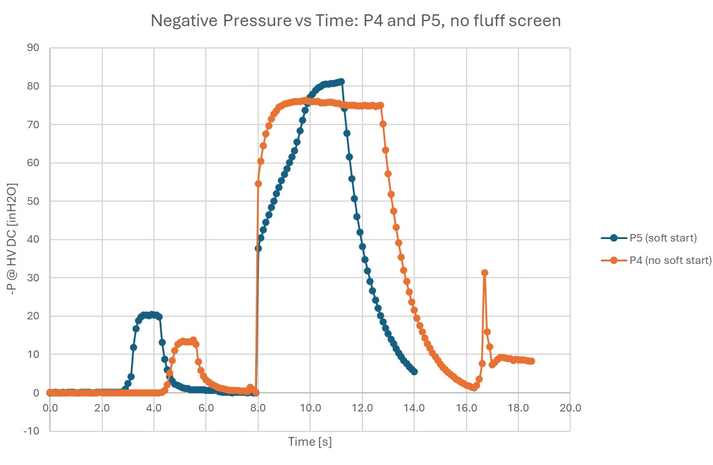
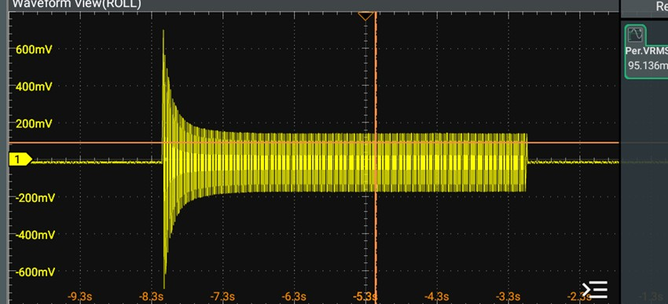
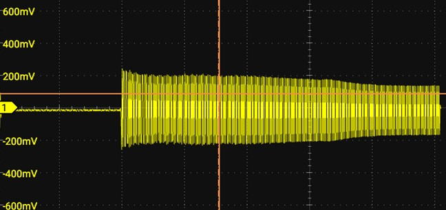

Experience 02/ 02
SharkNinja co-op
Corded vacuum design and testing: a patented airflow component, nozzle research, and test development.
I worked on several projects at SharkNinja. One major project was a new type of vacuum, the Shark Transformer, which released in June 2026. Another was improving vacuum nozzle technology.
See the Transformer on sharkninja.com
Along the way I learned to design for manufacture (DFM) for plastic injection molding, navigate a PLM, use basic electrical test equipment, work in a laboratory, run provided tests and create my own, collect highly accurate data, present to leadership, and analyze and debug complex fluid and mechanical systems.
Improved suction
The goal was to improve suction while the vacuum is in use.
When our team received the first off-tool build, we saw several problems, and loss of suction force was the root cause. I designed and prototyped a component that changes the behavior of the internal airflow and drastically reduced the loss. I pressure tested it inside the unit and iterated several times.

Steel molds have been cut to produce the component at mass-production scale for a projected initial 500,000 units. The patent is still being processed.
Castellation design for reverse cleaning
I designed castellations to improve reverse cleaning, a requirement for vacuums in the EU that is likely to reach the US. A current solution is an articulating squeegee that flips up to let debris through on the backstroke. A common problem is that the brushroll shoots debris out the back during that backstroke.
The castellations are based on Tesla valves, which let flow pass much more easily in one direction than the other. In the video, the castellations create vortexes that keep debris from shooting out the back of the nozzle.


Hard floor results looked extremely promising. Last, I tested cleanability with sand spread over thick carpet (my own tests, not equivalent to third-party testing standards). Cleanability scores dropped too much. I concluded the castellations made the nozzle ride up on the carpet and lose suction, so I dropped the project.


Valve door design
I designed valve doors for a vacuum. Criteria:
- Don't stick out
- Robust
- No sliding contact that could wear down the seal
Pressure and current testing
One cleaning cycle needed a high pressure delta to work, but the motor ramp-up tripped home circuit breakers. I tested different cycle programs that lowered peak current while keeping a high pressure delta.

Using an oscilloscope and a pressure sensor, I compared the old working program (orange, top) with the new failing one (blue, bottom).

